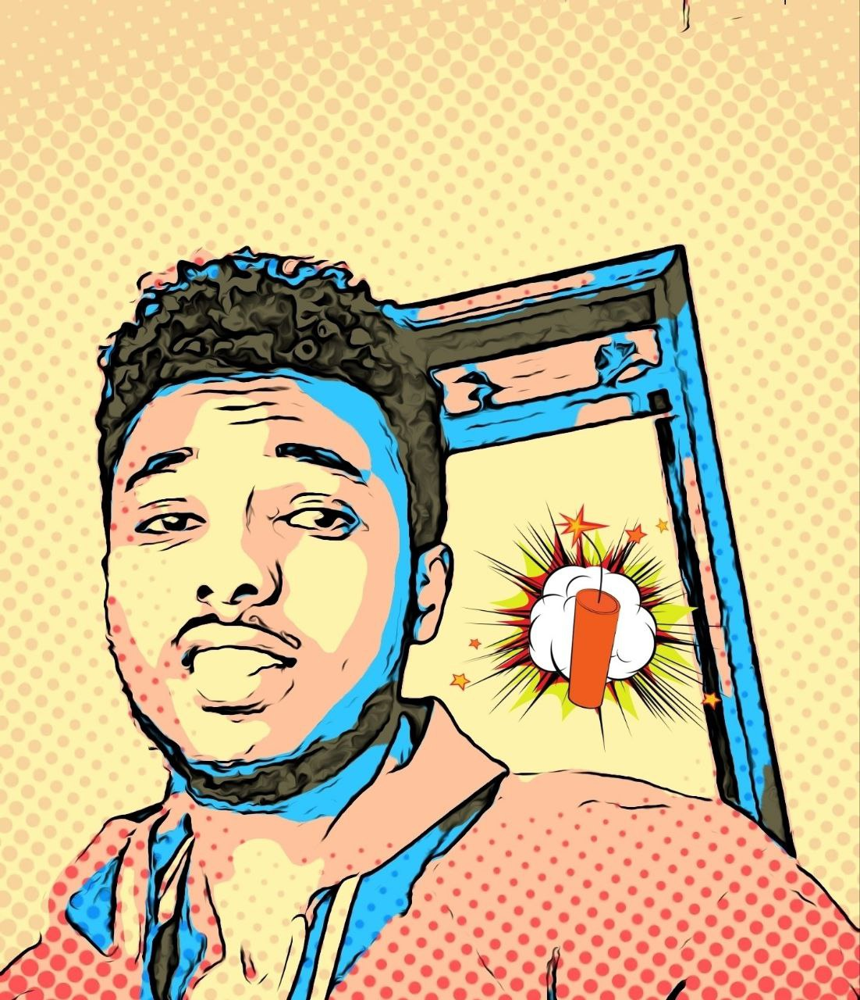

I was born and raised in a town named Alem Gena into a loving family. Although the town is fairly unknown, It is quite close to the capital which is really nice.
I grew up in a family of six with 2 brothers and a sister. My parents instilled in me the values of hard work, dedication, and perseverance from young, and I think thats where I got my pitbullish trait of never giving up. Their unwavering support has been instrumental in shaping the man I am today and who I will be in the future.
Education
I attended school at Everst Youth Academy where I developed a passion for programming during our IT lab sessions where our teacher would encourage us to try to code simple projects like hangman, a simple calculator and other stuff , which seem simple now but were absolutely horrifying at the time, using python.
Achievements
Some of my achievements my mom brags about in our neighbourhood include:
Being accepted to AAIT's Software department.
Certificate of recognition for my 12th grade results.
Finishing second in the Sheger city math competition
Winning gold in our school's annual football tournament.
I like to believe I am a highly ambitious guy and although I have achieved some of my goals, I know there are still so many more left and as my highschool principal used to say Never let today's victory be the seed of tommorrow's downfall, but I am grateful for the opportunities I have had and the people who have supported me along the way. I am excited to see what the future holds and continue to grow both personally and professionally.
Gallery

My graduation certificateCertificate award from the sub-region Admistration